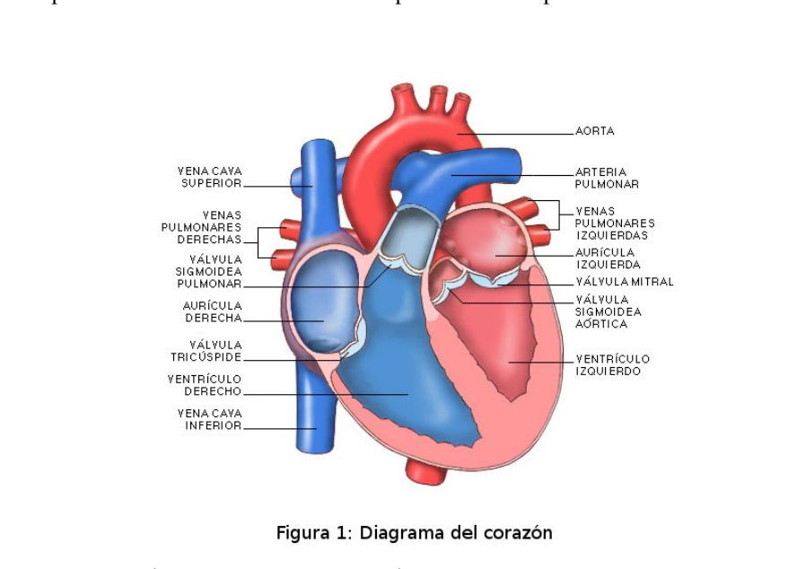
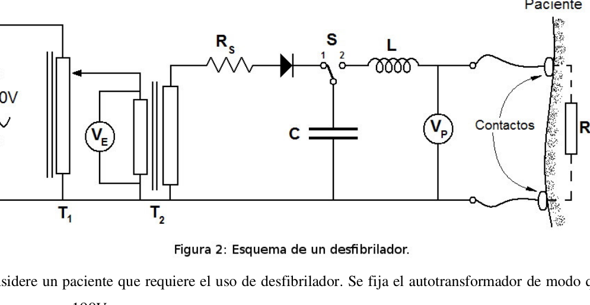

Problema hecho con el corazon
PT138. Ciudad de Buenos Aires. Verde.
Un problema hecho con el corazón.
Nuestro corazón es una de las maravillas de nuestro cuerpo humano. Su funcionamiento es muy
complejo y la naturaleza se tomó decenas de millones de años para diseñarlo, pero ha hecho un trabajo
realmente magnífico.
El corazón está formado por dos cámaras superiores llamadas aurículas y dos cámaras inferiores
llamadas ventrículos. Se llama Septum a la división del corazón en mitades izquierda y derecha. Dos
arterias y seis venas forman los conductos principales. La masa muscular del corazón se llama
miocardio (del griego mios, músculo).
La función del corazón es bombear sangre al cuerpo y la lleva a cabo gracias a la contractilidad de las
células que forman el miocardio.
Cada célula (modelada esférica) tiene un diámetro de
m
µ
10
y funciona como una pila química. En
condiciones normales, el interior de una célula se encuentra a una diferencia de potencial de
- 116 - mV 80 − respecto a su exterior. La diferencia de potencial corresponde a la distribución de iones en la célula.
- a) Modele estas células como una esfera sólida conductora y realice un dibujo en el cual se
observe la distribución de iones.
b) Calcule el valor medio del campo eléctrico en el interior de una célula.
Las contracciones del corazón permiten el bombeo de la sangre y son el resultado de cierta actividad eléctrica que comienza en las células de conducción ubicadas en un área muy pequeña (del orden de 2 1mm ) cerca de la aurícula derecha. Estas células cambian su potencial de mV 80 − a mV 20
.
Cuando alcanzan los
mV
20
+
las células vecinas comienzan a cambiar su potencial propio y el
proceso se propaga de arriba hacia abajo hasta alcanzar las células de los ventrículos. El proceso
responde a un comportamiento ondulatorio y se conoce a esta onda con el nombre de “onda de
despolarización”. El proceso inverso en el que las células recuperan el potencial relativo de
mV
80
−
se
denomina repolarización y comienza en los ventrículos después de que todas las células se encuentran
despolarizadas.
El proceso de despolarización y repolarización celular determina que nuestro miocardio se comporte a
cada instante como un dipolo eléctrico. Esto da lugar al diagnostico mediante electrocardiogramas
(ECG). Para llevar a cabo un ECG se colocan, por lo general, 12 electrodos repartidos por todo el
cuerpo a fin de sensar potenciales y compararlos con los valores típicos esperados para cada punto.
2) Modele el corazón como un cilindro recto y realice un diagrama de líneas de campo eléctrico
indicando el sentido del flujo cuando se propaga una onda de repolarización.
Existen diversas enfermedades que atacan al corazón y diversas técnicas para tratarlas. En un caso
extremo y fatal, un corazón puede dejar de funcionar. Esto se debe a que la actividad eléctrica del
miocardio cesa. Las células detienen el proceso de despolarización-repolarización y entonces el
músculo cardíaco ya no realiza las contracciones necesarias para el bombeo de la sangre. En esta
- 117 -
situación, es necesario poner el sistema en marcha nuevamente. Para ello, los médicos un aparato
llamado desfibrilador que consiste básicamente en un generador de impulsos que entrega a la salida
una tensión cuyo valor pico se puede ajustar hasta un máximo aproximado de kV
5
.
En la figura 2 se observa el esquema eléctrico básico de un desfibrilador. El capacitorC se carga cuando el interruptor S se encuentra en la posición 1. Una vez cargado se colocan los contactos del desfibrilador en el pecho del paciente y se pulsa una llave que coloca al interruptor S en la posición 2. Entonces el capacitor se descarga a través de un circuito del cual el paciente forma parte mediante la resistencia T R que se llama resistencia transtorácica y es propia del paciente. Su valor promedio es de Ω 100 . En el circuito 1T es un autotransformador variable de V 220 0 − , 2 T es un transformador con núcleo toroidal y relación de transformación 0,044. El primario de este transformador consta de125espiras distribuidas uniformemente alrededor del núcleo.
Considere un paciente que requiere el uso de desfibrilador. Se fija el autotransformador de modo que
su salida sea de
V
190
.
3) Determine la lectura
E
V del voltímetro
4) Hallar el número de espiras del secundario de
2
T
5) Determine la tensión en bornes del secundario de
2
T
El capacitor debe tener una capacidad
F
C
µ
30
para un desfibrilador de kV
5
de tensión máxima.
Suponga que se trata de un capacitor de placas paralelas de área efectiva
2
2500cm
S =
. Se puede
elegir entre dos posibles dieléctricos para rellenar el espacio entre las placas:
Opción 1: aceite de constante dieléctrica
5
d k y rigidez dieléctrica mm kV / 80
Opción 2: cerámico de constante dieléctrica 800
d k y rigidez dieléctrica cm kV / 900 . 6) Determine el dieléctrico más apropiado. Justifique.
- 118 - El circuito de descarga del capacitor es un circuito RLC. Esta configuración determina que a medida que el capacitor se descarga, se tiene a través del circuito una corriente variable en el tiempo de la forma: ( ) ( ) t t t t e A e A e i β β α − −
= 2 1
Donde [ ] 1 2 −
= s L R α ; [ ] 1 2 0 2 −
−
s ω α β ; y [ ] 2 0 1 −
= s LC ω
Al mismo tiempo, la tensión en función del tiempo para este circuito es: ( ) ( ) ( ) ( ) ( ) + − −
− − β α α β β α α β t t t e A e A C v 2 1 1
El inductor del desfibrilador tiene una autoinductancia H L 1,0
y como ya se mencionó un capacitor F C µ 30
. Suponga que se utiliza el desfibrilador luego de haber cargado el capacitor con
J
360
, en
un paciente cuya resistencia transtorácica tiene un valor constante
Ω
= 150
T
R
.
7) Obtenga el valor de las constantes
1
A y
2
A .
- 119 -
INSTANCIAS LOCALES PROBLEMAS EXPERIMENTALES
- 120 -


Topic: Electrostatics, Circuits Metodi: Gauss’s Law, Electric Potential Method, Differential Equations Competenze: Physical Reasoning, Mathematical Modeling Objects: Capacitor, Conducting Sphere, Inductor Fonte: Testo (PDF) — p.3
Problema del cuore
PT138. Città di Buenos Aires. Verde. Un problema del cuore. Il nostro cuore è una delle meraviglie del nostro corpo umano. Il suo funzionamento è molto La natura ha impiegato decine di milioni di anni per progettarlo, ma ha fatto un lavoro. davvero magnifico. Il cuore è formato da due camere superiori chiamate atomi e due camere inferiori. chiamate ventricole. Si chiama septum a dividere il cuore in due metà sinistra e destra. Due . le arterie e sei vene formano i principali condotti. La massa muscolare del cuore si chiama miocardico (dal greco mios, muscolo). La funzione del cuore è quella di pompare sangue al corpo e lo fa grazie alla contractilità delle musculature. cellule che formano il miocardico. Ogni cellula (modellato sfericamente) ha un diametro di m µ 10 e funziona come una pila chimica. En Le condizioni normali, all’interno di una cellula si trova a una differenza di potenziale di
- 116 - mV 80 − rispetto all’esterno. La differenza di potenziale corrisponde alla distribuzione di ioni nella cellula.
- a) Modella queste cellule come una solida sfera conduttrice e disegna in cui si osservate la distribuzione degli ioni. b) Calcolare il valore medio del campo elettrico all’interno di una cellula. Le contrazioni cardiache consentono di pompare il sangue e sono il risultato di un’attività determinata. La capacità di trasmissione di energia elettrica inizia nelle cellule di conduzione situate in un’area molto piccola (di ordine de 2 1 mm) vicino all’atrio destro. Queste cellule modificano il loro potenziale di mV 80 − a mV 20
. Quando raggiungono i mV 20 + Le cellule vicine iniziano a cambiare il loro potenziale e il loro potenziale. Il processo si diffonde da sopra a sotto fino a raggiungere le cellule ventricolari. Il processo risponde a un comportamento ondulatorio e questa onda è conosciuta come onda di La politica di sviluppo è stata Il processo inverso in cui le cellule recuperano il relativo potenziale di mV 80 − se si chiama repolarizzazione e inizia nei ventricoli dopo che tutte le cellule si trovano
- E’ una cosa molto più difficile. Il processo di depolarizzazione e repolarizzazione cellulare determina che il nostro miocardico si comporti in modo Ogni istante come un dipolo elettrico. Questo porta alla diagnosi mediante elettrocardiogrammi. (ECG). Per eseguire un ECG vengono collocati, di solito, 12 elettrodi distribuiti in tutto il sistema. Il corpo per sensare potenziali e confrontarli con i valori tipici attesi per ogni punto.
- Modella il cuore come un cilindro retto e realizza un diagramma di linee di campo elettrico Indicando il senso del flusso quando si diffonde un’onda di repolarizzazione. Esistono diverse malattie che colpiscono il cuore e diverse tecniche per curarle. In un caso estrema e fatale, un cuore può smettere di funzionare. Questo è dovuto al fatto che l’attività elettrica del
-
Il miocardico cessa. Le cellule arrestano il processo di dispolarizzazione-ripolarizzazione e poi il il muscolo cardiaco non fa più le contrazioni necessarie per pompare il sangue. In questo .
-
117 - La situazione è che il sistema deve essere riavviato. Per questo, i medici hanno un dispositivo. chiamato defibrillatore che consiste essenzialmente in un generatore di impulsi che consegna all’uscita una tensione il cui valore di picco può essere regolato fino a un massimo approssimativo di kV 5 . La figura 2 mostra il schema elettrico di base di un defibrillatore. Il condensatore C si carica quando il interruttore S è in posizione 1. Una volta caricato vengono inseriti i contatti del il defibrillatore sul petto del paziente e si premere un tasto che mette l’interruttore S in posizione 2. Il capacitore viene quindi scaricato attraverso un circuito di cui il paziente fa parte attraverso il resistenza T R che si chiama resistenza transtorasica e che è propria del paziente. Il suo valore medio è de Ω 100 . Al circuito 1T è un autotrasformatore variabile di V 220 0 − , 2 T è un trasformatore con nucleo. Torico e rapporto di trasformazione 0,044. Il primario di questo trasformatore è composto da 125 spire. distribuite uniformemente intorno al nucleo.
Considera un paziente che richiede l’uso di un defibrillatore. Si fissa l’autotrasformatore in modo che
la sua uscita è di
V
190
.
3) Determina la lettura
E
V del voltometro
4) Indicare il numero di spirale del secondo ciclo di
2
T
5) Determina la tensione di un’area di tensione di
2
T
Il capacitore deve avere una capacità
F
C
µ
30
per un defibrillatore kV 5 di massima tensione. Supponiamo che si tratti di un capacitore di piastre parallele di superficie effettiva 2 2500cm S = . Si può scegliere tra due possibili dieletrici per riempire lo spazio tra le schede: Opzione 1: olio di costante dielectrico 5
d k e rigidità dielettrica mm kV / 80
Opzione 2: ceramica di costante dielettrica 800
d k e rigidità dielettrica cm kV / 900 . 6) Determina il dielettrico più appropriato. giustifica.
- 118 - Il circuito di scarico del capacitore è un circuito RLC. Questa configurazione determina che a misura Quando il condensatore si scarica, si ha attraverso il circuito un corrente variabile nel tempo della forma: ( ) ( ) t t t t e A e A e i β β α − −
= 2 1
Dove? [ ] 1 2 −
= s L R α ; [ ] 1 2 0 2 −
−
s ω α β ; y [ ] 2 0 1 −
= s LC ω
Allo stesso tempo, la tensione in funzione del tempo per questo circuito è: ( ) ( ) ( ) ( ) ( ) + − −
− − β α α β β α α β t t t e A e A C v 2 1 1
L’induttore del defibrillatore ha un’autoinduttanza H L 1,0
e come già detto un capacitore F C µ 30
. Supponiamo che si utilizzi il defibrillatore dopo aver caricato il capacitore con J 360 , en un paziente la cui resistenza transtorasica ha un valore costante Ω = 150 T R . 7) Ottieni il valore delle costanti 1 A y 2 A .
- 119 -
Istituzioni locali Problemi sperimentali
- 120 -
Topic: Electrostatics, Circuits Metodi: Gauss’s Law, Electric Potential Method, Differential Equations Competenze: Physical Reasoning, Mathematical Modeling Objects: Capacitor, Conducting Sphere, Inductor Fonte: Testo (PDF) — p.3
Problem with the heart
PT138. City of Buenos Aires. Green, please. A problem with the heart. Our heart is one of the wonders of our human body. Its operation is very It took tens of millions of years to design it, but it has done a job. It’s really magnificent. The heart is made up of two upper chambers called atoms and two lower chambers. They’re called ventricles. It’s called the septum to divide the heart into left and right halves. Two . arteries and six veins form the main conduits. The heart muscle mass is called myocardium (from Greek mios, muscle). The heart ‘s function is to pump blood into the body and performs it through the contractility of the muscles . cells that form the myocardium. Each cell (spherical modelled) has a diameter of m µ 10 And it works like a chemical stack. En Under normal conditions, the interior of a cell is at a potential difference of
- 116 - mV 80 − about its exterior. The potential difference corresponds to the ion distribution in the cell.
- (a) Model these cells as a solid conductive sphere and draw a drawing in which they are Look at the distribution of ions. (b) Calculate the average value of the electric field inside a cell. Heart contractions allow blood to pump and are the result of certain activity. The electrical activity starts in the conduction cells located in a very small area (of the order de 2 1 mm) near the right atrium. These cells change their potential for mV 80 − a mV 20
. When they reach the mV 20 + Neighbouring cells begin to change their own potential and the The process spreads from top to bottom to reach the cells of the ventricles. The process It responds to a wave behavior and is known as a wave wave. The Commission has already adopted a proposal for a regulation on the The reverse process in which cells recover the relative potential of mV 80 − se It’s called repolarization and it starts in the ventricles after all the cells are together. The world is polarized. The process of depolarization and cell repolarization determines how our myocardium behaves. Every moment like an electric dipole. This results in the diagnosis by electrocardiograms. (ECG) To carry out an ECG, 12 electrodes are usually placed throughout the The body to sense potential and compare them to the typical expected values for each point. 2) Modeling the heart like a straight cylinder and making a diagram of electric field lines. Indicating the direction of flow when a repolarization wave propagates. There are various diseases that affect the heart and various techniques for treating them. In one case . Extreme and fatal, a heart can stop working. This is because the electrical activity of the My myocardium is stopped. The cells stop the process of depolarization-repolarization and then the The heart muscle no longer performs the contractions necessary for pumping blood. In this one .
- 117 - The situation is that the system needs to be restarted. For this, doctors use a device. called a defibrillator which basically consists of a pulse generator delivering the output. a voltage whose peak value can be adjusted to a maximum approximate of kV 5 . The basic electrical scheme of a defibrillator is shown in Figure 2. The C capacitor is charging when the S-switch is in position 1. Once loaded, the contacts of the The patient’s chest defibrillator and a key is pressed that puts the S switch in position 2. The capacitor is then discharged through a circuit of which the patient is a part by the resistance T R is called transtoratic resistance and is patient-specific. Its average value is de Ω 100 . On the circuit . 1T is a variable self-transformer of V 220 0 − , 2 T is a transformer with a core. Torus and transformation ratio 0,044. The primary transformer consists of 125 spires. The radiation is distributed evenly around the nucleus.
Consider a patient who requires the use of a defibrillator. The auto-transformer is fixed so that
its exit is from
V
190
.
3) Determine the reading
E
V of the voltmeter
4) Find the number of secondary springs of the
2
T
5) Determine the voltage at the secondary end of the
2
T
The capacitor must have a capacity
F
C
µ
30
for a kV defibrillator 5 The maximum voltage. Suppose it is an effective area parallel plate capacitor 2 2500cm S = . You can . Choose from two possible dielectric to fill the space between the plates: Option 1: oil of dielectric constant 5
d k and dielectric rigidity mm kV / 80
Option 2: ceramic with a dielectric constant 800
d k and dielectric rigidity cm kV / 900 . 6) Determine the most appropriate dielectric. You justify it.
- 118 - The capacitor discharge circuit is an RLC circuit. This configuration determines that at a rate of The capacitor is discharged, a variable current is passed through the circuit in the time of the shape: ( ) ( ) t t t t e A e A e i β β α − −
= 2 1
Where ? [ ] 1 2 −
= s L R α ; [ ] 1 2 0 2 −
−
s ω α β ; y [ ] 2 0 1 −
= s LC ω
At the same time, the voltage depending on the time for this circuit is: ( ) ( ) ( ) ( ) ( ) + − −
− − β α α β β α α β t t t e A e A C v 2 1 1
The defibrillator inductor has an autoinduction H L 1,0
And as mentioned earlier, a capacitor. F C µ 30
. Suppose you use the defibrillator after you have charged the capacitor with J 360 , en a patient whose transtoratic resistance is constant Ω = 150 T R . 7) Get the value of the constants 1 A y 2 A .
- 119 -
Local authorities Experimental problems
- 120 -
Topic: Electrostatics, Circuits Metodi: Gauss’s Law, Electric Potential Method, Differential Equations Competenze: Physical Reasoning, Mathematical Modeling Objects: Capacitor, Conducting Sphere, Inductor Fonte: Testo (PDF) — p.3